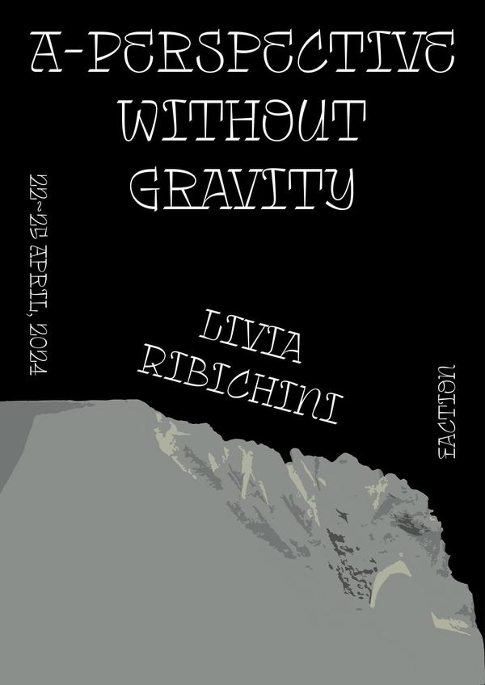

A Perspective Without Gravity
Livia Ribichini
2024.04.22 – 04.25
《A Perspective Without Gravity》는 이탈리아 출신 작가 Livia Ribichini의 전시로, 중력이 사라진 상태에서의 시선과 인식의 전환을 탐구한다. 산과 지형의 이미지를 뒤집고 재배치하여, 익숙한 풍경이 낯선 추상으로 변모하는 순간을 포착한다.
작가는 지질학적 형태와 신체적 감각 사이의 관계에 주목하며, 수직과 수평의 기준이 해체될 때 열리는 새로운 지각의 가능성을 제안한다. 4일간의 짧은 전시 기간 동안, 공간은 중력으로부터 해방된 하나의 사유 실험실로 기능했다.